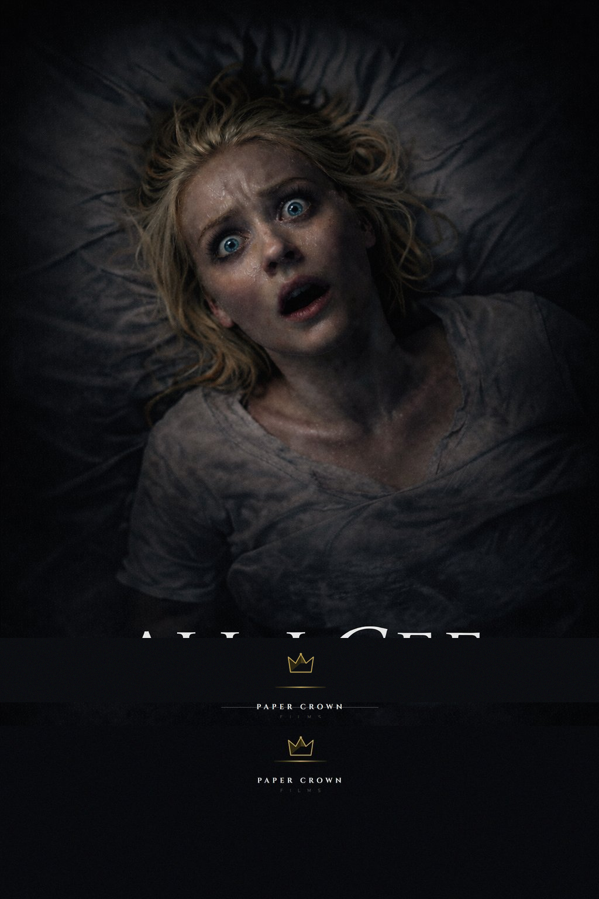
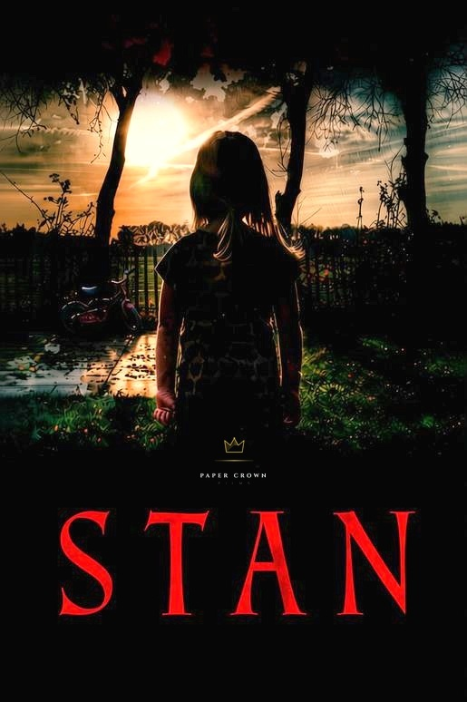
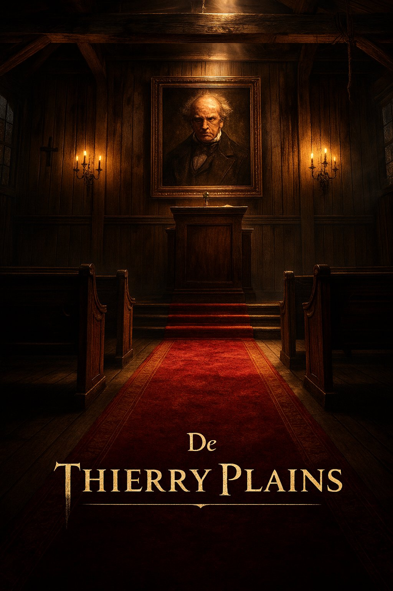

Paper Crown Films is an independent production company dedicated to crafting psychological horror and suspense-driven narratives. We believe in stories that linger—films that unsettle, provoke, and challenge audiences long after the credits roll.
Films



×
ALL I CEE
Horror • 88 mins
Alice awakens in a hospital bed, paralysed and unable to speak—yet fully conscious. As doctors and nurses discuss her case around her, she realises with mounting horror that she's trapped in her own body, aware of everything but powerless to respond.
In Development
×
STAN
Horror • 95 mins
When 8-year-old Emma's mother vanishes, her imaginary friend Stan becomes her only comfort—until she begins to suspect he may know more about her mother's disappearance than he's letting on.
In Development
×
DE THIERRY PLAINS
Horror • 90 mins
After crashing on a remote mountain road, a man searches an eerily perfect small town for his missing girlfriend—only to slowly realise he may have never survived the crash at all.